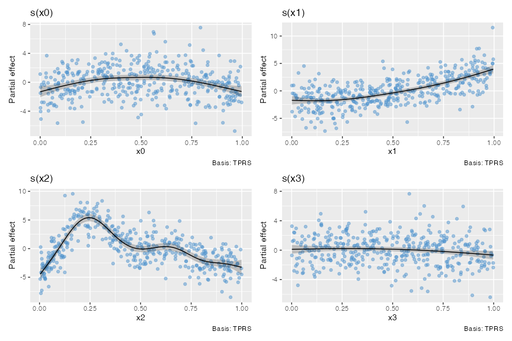

Overview
Working with GAMs within the ‘tidyverse’ can be tedious and even difficult without a good understanding of GAMs themselves and how the model is returned by ‘mgcv’ and what the model objects contain. ‘gratia’ is designed to help with this.
‘gratia’ provides ‘ggplot’-based graphics and utility functions for working with generalized additive models (GAMs) fitted using the ‘mgcv’ package, via a reimplementation of the plot() method for GAMs that ‘mgcv’ provides, as well as ‘tidyverse’ compatible representations of estimated smooths.
Features
The main features of gratia are currently
-
A ggplot2-based replacement for
mgcv:::plot.gam():draw.gam().For example, the classic four term additive example from Gu & Wahba:

Or for a bivariate smooth:

Note that some specialist smoothers (
bs %in% c("mrf","sw", "sf")) are not currently supported, but univariate, factor and continuousby-variable smooths, simple random effect smooths (bs = 're'), factor-smooth interaction smooths (bs = "fs"), constrained factor smooths (bs = "sz"), full soap film smooths (bs = "so"), and bivariate, trivariate, and quadvariate TPRS and tensor product smooths are supported, Estimation of derivatives of fitted smoothers:
derivatives(),Estimation of point-wise across-the-function confidence intervals and simultaneous intervals for smooths:
confint.gam().-
Model diagnostics via
appraise()
Installing gratia
gratia is now available on CRAN, and can be installed with
however gratia is under active development and you may wish to install the development version from github. The easiest way to do this is via the install_github() function from package remotes. Make sure you have remotes installed, then run
to install the package. Alternatively, binary packages of the development version are available from rOpenSci’s R Universe service:
History
gratia grew out of an earlier package, schoenberg, itself a development of the earlier package tsgam, which was originally intended to be used with GAMs fitted to time series. As I was developing tsgam however it became clear that the package could be used more generally and that the name “tsgam” was no longer appropriate. To avoid breaking blog posts I had written using tsgam I decided to copy the git repo and all the history to a new repo for the package under the name schoenberg. At a later date someone released another package called schoenberg to CRAN, so that scuppered that idea. Now I’m calling the package gratia. Hopefully I won’t have to change it again…
Why gratia?
In naming his greta package, Nick Golding observed the recent phenomena of naming statistical modelling software, such as Stan or Edward, after individuals that played a prominent role in the development of the field. This lead Nick to name his Tensor Flow-based package greta after Grete Hermann.
In the same spirit, gratia is named in recognition of the contributions of Grace Wahba, who did pioneering work on the penalised spline models that are at the foundation of the way GAMs are estimated in mgcv. I wanted to name the package grace, to explicitly recognise Grace’s contributions, but unfortunately there was already a package named Grace on CRAN. So I looked elsewhere for inspiration.
The English word “grace” derives from the Latin gratia, meaning “favor, charm, thanks” (according to Merriam Webster).
The chair that Grace Wabha currently holds is named after Isaac J Schoenberg, a former University Madison-Wisconsin Professor of Mathematics, who in a 1946 paper provided the first mathematical reference to “splines”. (Hence the previous name for the package.)